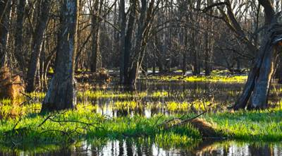
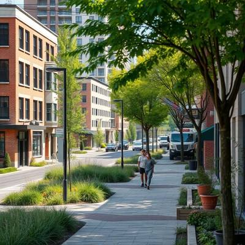
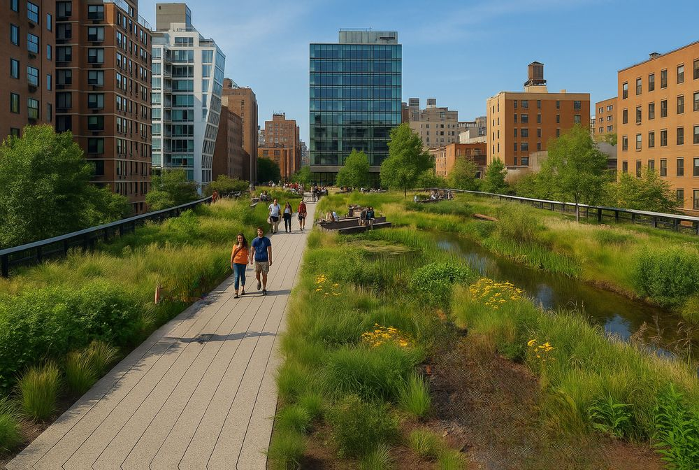
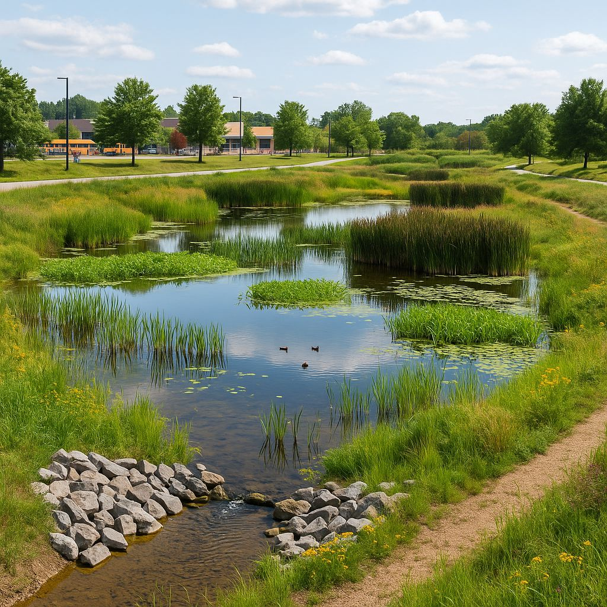
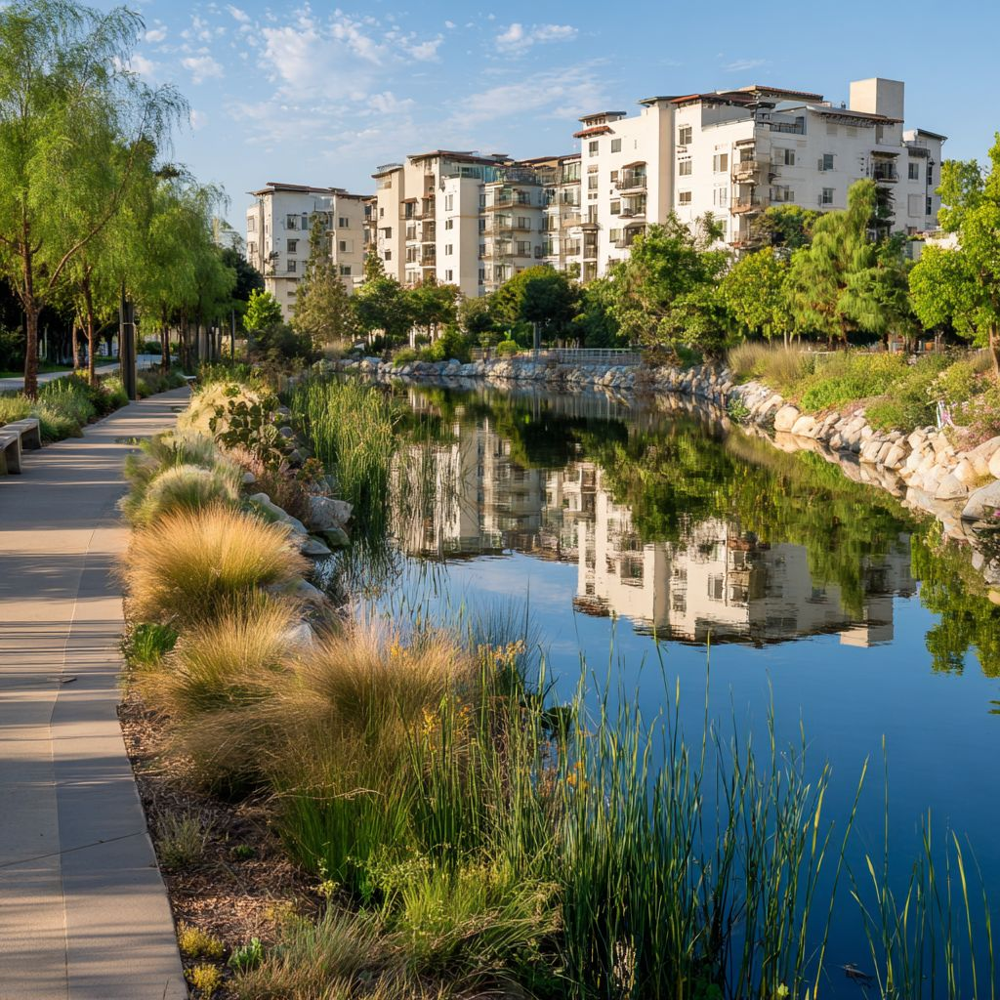

Improving St. Charles County Watersheds
Stormwater planning, habitat conservation and healthy ecosystems for every community in St. Charles County.

About Us & Our Mission
We promote stormwater planning and habitat conservation to improve the health and resiliency of St. Charles County's watersheds.
→Upcoming Events & News
Join us for our next event.
→Current Projects
Learn about our ongoing efforts.
→Get Involved
Join our community and make a difference.
→

Proactive stormwater management for all of St. Charles County
The St. Charles Watersheds Alliance (SCWA) is a non-profit organization dedicated to advocating for proactive stormwater runoff management and habitat conservation in all of St. Charles County and its municipalities.
SCWA seeks to promote diligent stormwater planning and Low Impact Development green infrastructure techniques, and provide resources for stormwater education, planning, and construction. We encourage native planting and habitat restoration to enhance community resilience to stormwater impacts and improve water quality, and we promote resource sharing and collaborative networks with other organizations, businesses, and government entities.
Our goal is to create a sustainable and healthy ecosystem for all.
Watershed-scale thinking for a growing county
Streams, floodplains, prairies and wetlands don't stop at property lines. SCWA works at the scale of the whole watershed.

Working together for healthier watersheds
We work alongside residents, HOAs, developers, municipalities and businesses toward healthier, more resilient neighborhoods, through practical guidance, outreach and education, and locally driven research on St. Charles County’s streams and watersheds.

Growth that works with the land
We offer residents and developers a practical, balanced look at proposed projects, such as Project Cumulus, weighing the effects on streams, habitat and stormwater and suggesting sensible green infrastructure solutions both can support.

Certification & free resources
In partnership with MidAmerica Watershed.Org, we support green infrastructure certification and free planning tools, standards and GIS resources.
See the free resources →Where rainfall goes, by land cover
On natural ground, most rain soaks into the soil or returns to the air through plants. As land is paved, that rain runs off instead, carrying pollutants, eroding stream banks and adding to flooding downstream.
On heavily paved land, runoff jumps from 10% to 55% of rainfall. Connected green infrastructure, like rain gardens, stream buffers, green streets and restored floodplains, helps St. Charles County watersheds get that water back into the ground.
- Runoff
- Shallow infiltration
- Deep infiltration
- Evapotranspiration
Our Sponsors
Sponsors make our forums, educational resources and community projects possible.
Platinum Sponsor
More than $5,000
Gold Sponsor
$1,000 to $5,000

Silver Sponsor
$500 to $1,000

Bronze Sponsor
$100 to $500